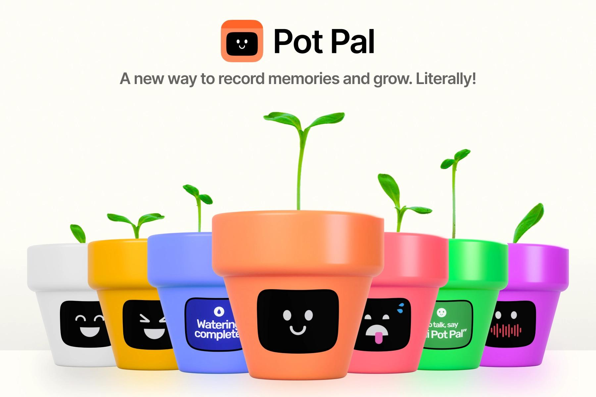
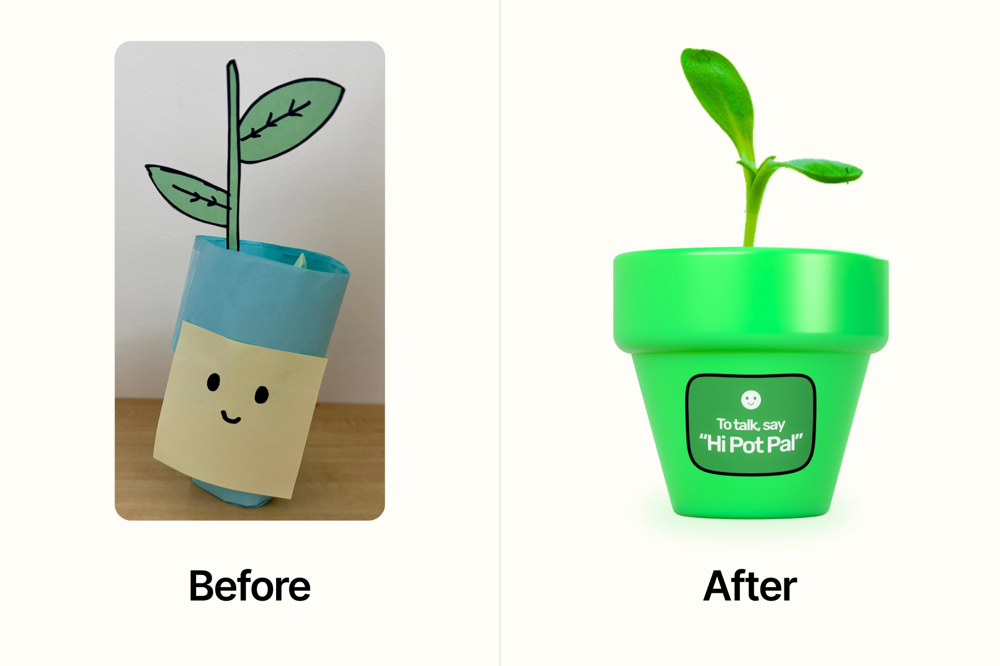
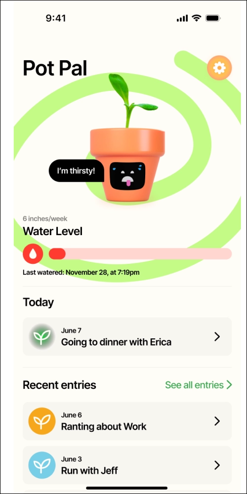
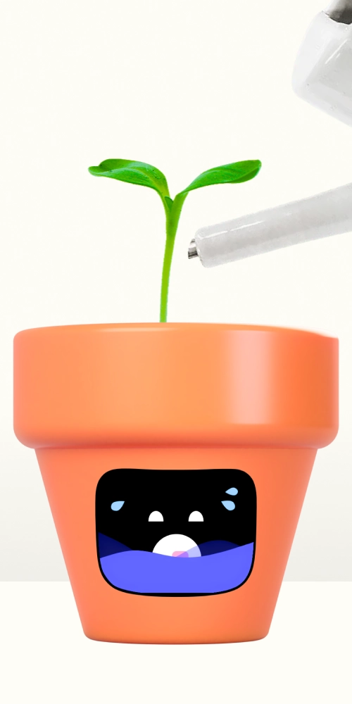
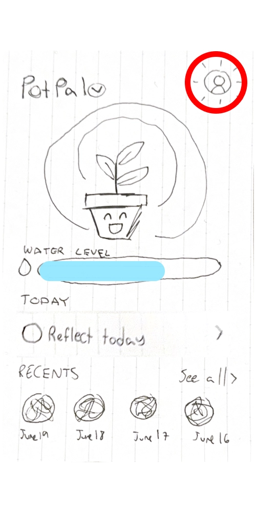
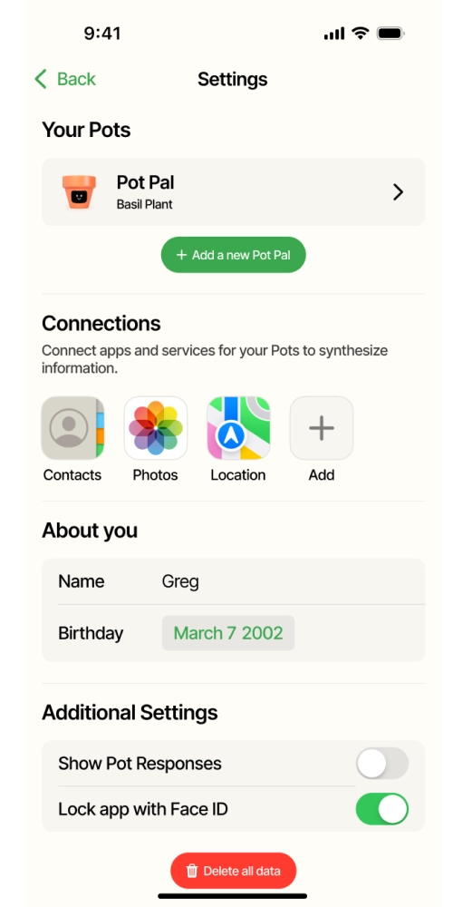

A plant pot and complement app designed to help users reflect on emotions through daily plant care.

Pot Pal is a smart plant pot and companion mobile app that weaves emotional reflection into everyday routines. Instead of carving out dedicated time to write, users simply talk to their plant. Pot Pal listens, records, and synthesizes their thoughts into a growing journal of memories.
PROBLEM & DESIGN OVERVIEW
Traditional journaling is a powerful tool for self-reflection, but it creates friction. It requires dedicated time, structured thinking, and a willingness to sit down and write. All of these can feel overwhelming in a busy life.
Pot Pal flips the model. Instead of planning time to journal, users reflect naturally while doing something they already do — caring for a plant. Conversations with the pot are recorded and stored in a companion app, turning everyday plant care into a growing archive of memories and insights.
POT PAL'S KEY FEATURES
Conversations are recorded and stored so users can revisit memories, recognize emotional patterns, and track how they've grown over time. Pot Pal can even pull insights from past entries to offer personalized suggestions.
Speaking about feelings in real-time provides immediate relief and prevents emotional suppression. Regularly debriefing with Pot Pal helps users build resilience and stay grounded in the present.
BACKGROUND
PROMPT
Propose a design that helps people collect and interact with their personal data to support them in reaching their goals.
Our course prompt challenged us to think big about self-tracking and personal data. We started with individual brainstorming, and then we came together as a team to align on a problem space we all cared about: mental health. Our first idea was to design an AI conversational buddy people could open up to. However, the more we explored it, the more we realized the concept felt too clinical and one-dimensional. We also realized that similar apps already existed on the market. We wanted to tackle a unique problem space, so we pivoted. We asked ourselves: what's a way people already process their thoughts and feelings without a therapist? Journaling kept coming up. However, we didn't want to build another journaling app, something already available. After some conversations, we identified that journaling can feel time-consuming and easy to abandon. This led us to the idea of a plant: a living symbol of growth that thrives the more you show up for yourself. Pot Pal was born from that metaphor.
INTERVIEWS
To understand the problem space more, we conducted 1:1 conversational interviews with people who had stopped journaling or never started, focusing on friction points in existing journaling products. Here are some of the questions we asked:
Can you share some personal experiences or stories about your background with journaling?
What journaling tools or methods have worked best for you? What made them click?
In the best-case scenario, how do you envision journaling elevating your life?
INTERVIEW TAKEAWAYS
Participants found it difficult and embarrassing to reread their own writing. This led us to design a synthesis feature. Pot Pal listens, processes, and reformats entries before saving, so revisiting memories feels comfortable rather than "cringe".
One participant mentioned that they didn't enjoy typing on their phone. Another had stopped journaling entirely due to a hand injury. These insights motivated us to pursue speech as our primary recording modality, with typing as a fallback in the companion app.
Participants journaled to record memories and learn about themselves over time. This inspired our "All Entries" view: a color-coded archive where each entry's hue reflects the emotions of that day. Pot Pal also has the ability to surface relevant past memories in conversation, letting users revisit past experiences.
ITERATIVE DESIGN

Physical prototype → Digital mockup
Usability testing revealed that when users were presented with the pot, they didn't know how to interact with it. We added a microphone indicator on the pot's screen and introduced the activation phrase "Hi, Pot Pal!", making the interaction immediately clear.

App view

Pot display
Although users loved the idea of taking care of a plant, some were uncertain how much water to add and how to take care of it. We integrated water and weight sensors so the pot visually fills up on screen as water is added, removing the guesswork entirely.

Before

After
Users wanted more authority over personalization. We designed a settings page that lets users rename their Pot Pal, add additional pots, sync contacts and photos, and adjust accessibility options like on-pot captions. Users have real ownership of the experience.
REFLECTIONS
Our goal with Pot Pal was never to reinvent journaling. It was to meet people where they already were and enhance the overall experience. However, the more we designed, the more we realized how delicate that balance is. Journaling has meant something to people for centuries. It's a private space, a moment of intimacy, and a record of a life. We didn't want to obstruct that. Every feature we considered had to pass a simple test: does this add to the experience, or does it take something away from the beloved, classic journaling experience? These questions pushed us to be more thoughtful and intentional, and ultimately made us better designers.
At the end-of-quarter presentations, our peers voted Pot Pal as their favorite, and this meant more to us than any grade. I take immense pride in what our team created together. The Students' Choice Award felt like confirmation that we had built something people felt was deeply impactful and transformative. Hearing this from fellow designers, who understood exactly how much thought goes into every decision, made it especially meaningful.
If we had additional time, we would prioritize more usability research to dive deeper into user insights and validate whether our iterative designs were truly addressing the pain points discovered during testing. This would allow for a more thorough exploration of design alternatives and give us the space to implement feedback more meaningfully. Most importantly, we would have loved to get Pot Pal into the hands of real users.